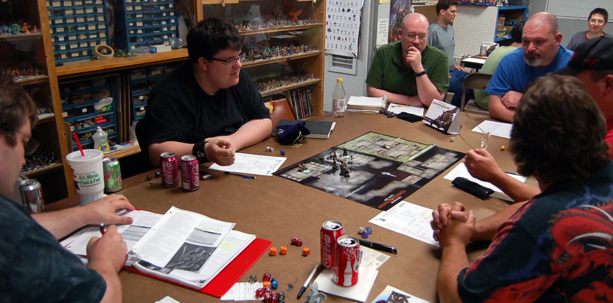

Игровой процесс
В большинстве игр специально назначенный игрок, обычно называется game master,
приобретает или готовит свод правил и вымышленный сеттинг, в котором каждый игрок разыгрывает роль
отдельного персонажа. Гроссмейстер описывает игровой мир и его обитателей;
другие игроки описывают предполагаемые действия своих персонажей, а гроссмейстер описывает
результаты. Некоторые исходы определяются игровой системой, а некоторые выбирает генеральный
директор. Этот шаблон был установлен первой опубликованной ролевой игрой,
Dungeons & Dragons, но не является универсальным для всех настольных RPG.

Техника игры
Ролевая игра может идти как словесно, так и с использованием правил игры.
При словесной игре чаще всего ведущий сам решает, может ли игрок сделать заявленное действие или нет.
Когда игра ведётся по формализированной игровой системе, то большая часть возможностей описана и как-либо охарактеризована правилами данной системы.
В такой игре результат игровой заявки определяется ведущим в соответствии с правилом, формулой или таблицей, предусмотренной игровой системой.
Немаловажное значение в ролевых играх имеют генераторы случайных чисел.
Они определяют все случайные события, а также помогают вносить некоторую вариацию при использовании навыков персонажа.
Благодаря этому игрок, персонаж которого имеет слаборазвитую характеристику, в результате удачного броска, может совершить действие, которое не удалось выполнить другому игроку,
персонаж которого имеет более развитую соответствующую характеристику, при плохом броске.
Чаще всего как генераторы случайных чисел используются комбинации игральных костей,
но в некоторых настольных ролевых играх используются колоды игральных карт или специальные фишки.
Считается, что кости являются самым удобным инструментом определения случайных чисел,
потому что предоставляют широкий выбор различных распределений. Также, среди играющих существует поверие, что игральные кости обладают некоторыми сверхъестественными особенностями, не присущими некоторым другим видам вероятностных генераторов. В апреле 2019 года компания Pandora’s Box Studio начала сбор средств на краудфандинговой платформе Crowd Republic на проект Randomizer Box (Рандомайзер бокс) — коробку генераторов чисел, ранений, повреждений, эмоций и пр. для облегчения генерации персонажа.
Также характерным атрибутом настольной ролевой игры является лист персонажа — лист,
на котором игрок записывает характеристики, навыки, особенности, снаряжение и информацию о своём персонаже. Реже используется экран мастера, на котором записаны основные правила, последовательность сцен и другая вспомогательная информация. Шаблоны листов персонажа и экрана мастера обычно прилагаются к фирменной системе, но часто переделываются игроками и мастерами под свой вкус.
О нас
"Atetnia games" специализируется на продаже и предоставлении услуг в сфере
ролевых настольных игр. Наша деятельность продолжается уже 3 года, и за это время
мы зарекомендовали себя как надежная компания с доступными предложениями.
В ассортимент нашего магазина входят системы ведения игр, настольные игры, аксессуары и многое другое.
Наличие уточняйте по телефону у нашего ассистента, есть возможность заказа некоторых отсутствующих товаров.
Телефон: +7-852-464-77-41
Почта: aterGames@gmail.ru